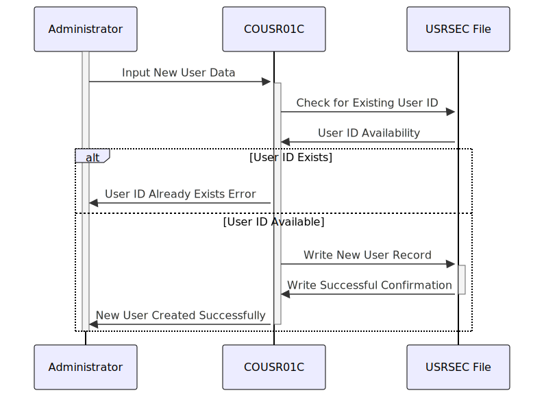

Gerado em: 1º de outubro de 2024
Título do Documento: CardDemo Gerenciamento de Usuários - Adicionar Novo Usuário Especificação do Programa
Descrição Resumida:
Este documento detalha a funcionalidade “Adicionar Novo Usuário” dentro do sistema CardDemo, com foco no programa COUSR01C. Este programa é responsável por registrar com segurança novos usuários, garantindo a precisão dos dados e reforçando os protocolos de segurança.
Histórias do Usuário:
Como administrador, preciso ser capaz de adicionar novos usuários ao sistema para que eles possam acessar o CardDemo e executar suas tarefas atribuídas.
Épico Relacionado:
6 - Gerenciamento de Usuários e Segurança
Requisitos Funcionais:
- Controle de Acesso: O programa deve ser acessível apenas a usuários com privilégios de administrador.
- Entrada de Dados: O programa deve fornecer campos de entrada para capturar as seguintes informações do usuário:
- Nome (Obrigatório)
- Sobrenome (Obrigatório)
- ID do Usuário (Obrigatório, Exclusivo)
- Senha (Obrigatória)
- Tipo de Usuário (Obrigatório - “Regular” ou “Admin”)
- Validação de Dados: O programa deve validar os dados inseridos para:
- Campos Obrigatórios: garantir que todos os campos obrigatórios sejam preenchidos.
- ID do Usuário Exclusivo: verificar se o ID do Usuário inserido já está em uso.
- Tipo de Dados: validação básica do tipo de dados (por exemplo, garantir que os nomes contenham apenas caracteres alfabéticos).
- Armazenamento de Dados do Usuário: Após a validação bem-sucedida, o programa deve armazenar as informações do novo usuário no arquivo USRSEC (banco de dados do usuário).
- Confirmação e Feedback:
- Sucesso: exibir uma mensagem de confirmação após a criação bem-sucedida do usuário.
- Erro: fornecer mensagens de erro claras e específicas para quaisquer falhas de validação, orientando o administrador a corrigir a entrada.
- Navegação na Tela:
- Fornecer opções para navegar de volta à tela anterior (Menu Admin) ou limpar os campos de entrada para adicionar outro usuário.
Requisitos Não Funcionais:
- Segurança:
- O programa deve seguir as Diretrizes de Segurança do Aplicativo CardDemo para armazenamento e gerenciamento de senhas.
- A entrada de senha deve ser mascarada para garantir a confidencialidade.
- Desempenho:
- O processo de criação do usuário deve ser concluído em um prazo razoável (por exemplo, dentro de 2 segundos).
- Usabilidade:
- A interface do programa (tela) deve ser fácil de entender e usar, com rótulos e instruções claras.
- As mensagens de erro devem ser concisas e informativas.
- Manutenibilidade:
- O código do programa deve ser bem estruturado, documentado e seguir os padrões de codificação para facilitar a manutenção futura.
Critérios de Aceite:
- O programa adiciona com sucesso um novo usuário ao arquivo USRSEC com dados válidos.
- O programa impede a criação de usuários com campos obrigatórios ausentes.
- O programa impede a criação de usuários com IDs de usuário duplicados.
- O programa fornece mensagens de erro claras e específicas para falhas de validação.
- O programa oferece opções de navegação de tela intuitivas.
Melhorias de Código:
- Tratamento de Erros: Implementar uma rotina centralizada de tratamento de erros para gerenciar diferentes cenários de erro com mais eficácia.
- Segurança de Senha: Aprimorar a segurança da senha aplicando hash e sal às senhas antes de armazená-las no arquivo USRSEC.
- Limpeza de Entrada: Implementar técnicas de limpeza de entrada para evitar vulnerabilidades como injeção de SQL ou cross-site scripting.
- Modularidade: Refatorar o código em módulos reutilizáveis (sub-rotinas ou funções) para melhorar a manutenção.
- Documentação: Adicionar comentários abrangentes ao código para explicar a lógica e a funcionalidade de diferentes seções.
Melhorias de Segurança:
- Complexidade da Senha: Impor regras de complexidade de senha (por exemplo, comprimento mínimo, caracteres especiais) para aumentar a força da senha.
- Controle de Acesso: Implementar o controle de acesso baseado em função (RBAC) em um nível granular para restringir o acesso a funcionalidades específicas com base nas funções do usuário.
- Log e Auditoria: Registrar todas as tentativas de criação de usuário, incluindo criações bem-sucedidas e falhas, para auditoria e monitoramento de segurança.
- Comunicação Segura: Se o aplicativo transmitir dados pela rede, usar protocolos seguros (por exemplo, TLS/SSL) para proteger informações confidenciais.
Diagrama Conceitual:

–Made by “Smart Engineering” (by Compass.UOL)–